The most basic unit of storage is the bit. At any point in time, a bit can be in only one of two states: “0” or “1.” Bits are generally implemented as two-state electronic devices (e.g., a current is flowing or not flowing, a voltage is high or low, a magnetic field is polarized in one direction or the opposite direction, etc). The symbol “0” is used to represent one of these states and the symbol “1” is used to represent the other. It really doesn’t matter which symbol (the “0” or the “1”) represents which physical state (e.g., “high” or “low”). All that is important is that the symbols be assigned consistently and that the two states be clearly distinguishable from each other. Sequences (or “patterns”) of bit values can be used to represent numbers (both positive and negative, integer and real), alphanumeric characters, images, sounds, and even program instructions. In fact, anything that can be stored in a computer must ultimately be stored as a pattern of bit values.
1 The binary number system
Today, virtually all civilizations use a base ten counting system. However, this has not always been so. In primitive tally systems, for example, there is one stroke for each object being counted. For example, the following tally pattern represents twelve:
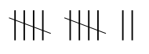
Some tally systems group strokes together. The one illustrated above places five strokes in each group. Most early systems attached little or no meaning to the order of the symbols used to represent a number. Roman numerals did use position, but only to indicate whether one value should be added to or subtracted from another value. For example, the Roman numeral MMC stands for 2,100, because “M” represents one thousand, “C” represents one hundred, and the positional rule states that when the symbols are arranged in order of decreasing value, all of the values should be added together. Hence, the meaning of MMC is \(1,000 + 1,000 + 100 = 2,100\). On the other hand, MCM means 1,900, because the positional rules states that when a symbol for a smaller value immediately precedes a symbol for a larger value, the smaller value is to be subtracted from the larger value. So, MCM is \(1,000 + (1,000 – 100) = 1,900\). The year 1999 as a Roman numeral is written MCMXCIX, meaning \(1,000 + (1,000 – 100) + (100 – 10) + (10 – 1)\).
Positional notation truly became useful only after the zero digit was introduced. Our modern decimal number system is a base ten positional system. It uses the ten symbols “0” through “9.” We count by sequencing through these symbols: “0” for zero, “1” for one, “2” for two, and so on. Once the last symbol is encountered (i.e., “9”), how do we represent the next number? What we need to do is replace the current symbol, “9”, with the first symbol in the series, “0”, and then increment the symbol immediately to the left of the current symbol by one. Since base ten numbers are assumed to be preceded by (usually unwritten) 0’s, the number nine can be written as “09.” Hence, cycling “9” back to “0” and incrementing the leftmost “0” to “1” gives “10” as the base ten symbol for the number ten. To continue counting, we cycle the rightmost digit through the symbols “0” through “9” again, producing “10” through “19” for the numbers ten through nineteen. The number twenty can be represented by resetting the “9” to “0” and replacing the “1” with the next symbol in the sequence, “2”, giving “20.” If we extend this to, say “99,” the idea is still the same. The next number, “100,” is obtained in the same manner. We first reset the “9” in the right-most digit to “0.” We then attempt to increment the next digit (also “9”), but it, too, is at the end of the sequence. Therefore, we reset it to “0” as well, and increment the left-most “0” to “1,” giving “100.”
Computer systems use base two, or binary, instead of base ten. Counting in binary is similar to counting in base ten. We still cycle through the sequence of symbols, incrementing the symbol to the left of the current symbol whenever the current symbol cycles back to the beginning of the sequence. The only difference is that instead of ten symbols, there are only two symbols: “0” and “1” (hence why it is called the binary number system). We begin counting by sequencing through these symbols: “0” for zero, “1” for one, and then we have reached the symbol with the largest value. Keeping in mind that the number one can be rewritten as “01,” we reset the rightmost symbol, “1”, to the first symbol in the sequence, “0”, and then increment the implied “0” immediately to the left to “1” giving “10” (the base two symbol for two).
Note carefully that the symbol “10” (pronounced “one zero”) when interpreted as a base two number refers to the number two, not ten. When discussing base two values you should never refer to the symbol “10” as “ten” since that is not the value of the number represented by this symbol.
Continuing with the example, the next number, three, can be represented in base two as “11” (we simply increment the right-most digit of “10” from “0” to “1”). To generate the base two representation of four, we begin with three represented as “011” (remember that it is fine to add 0’s to the left-hand side of a number symbol). Next, we set the rightmost “1” digit back to “0” and attempt to increment the middle digit. However, that digit is also at the end of the sequence, since it contains a “1.” So, we reset this digit to “0” as well and proceed to the third (leftmost) digit, which we increment from “0” to “1.” The final result is “100,” which is the base two representation of the number four.
This process for generating base two numbers can be continued indefinitely. The base ten (decimal) and base two (binary) representations of the numbers zero through eight are shown below. For readability, binary numbers are padded to the left with zeros):
| Base 10 (decimal) | Base 2 (binary) |
|---|---|
| 0 | 0000 |
| 1 | 0001 |
| 2 | 0010 |
| 3 | 0011 |
| 4 | 0100 |
| 5 | 0101 |
| 6 | 0110 |
| 7 | 0111 |
| 8 | 1000 |
Of course, we will need to develop a fast way to find out the number represented by a base two symbol (instead of “counting up to it”). However, before we leave the notion of counting, let’s investigate one other base that is commonly used when discussing programs and data at the machine level.
2 The hexadecimal number system
Base sixteen, or hexadecimal, uses sixteen symbols: “0” through “9” for the numbers zero through nine, and “A” through “F” for the numbers ten through fifteen. The number sixteen is written as “10” in base sixteen, since after the symbol “F” is encountered, it is necessary to cycle back to the beginning of the sequence, “0.” When this occurs, the digit immediately to the left of the current digit (an understood “0”) is incremented to “1,” giving “10.” The following illustrates the base ten, base two, and base sixteen representations of the numbers zero through twenty. For readability, binary numbers have been padded to the left with zeros:
| Base 10 (decimal) | Base 2 (binary) | Base 16 (hexadecimal) |
|---|---|---|
| 0 | 00000 | 0 |
| 1 | 00001 | 1 |
| 2 | 00010 | 2 |
| 3 | 00011 | 3 |
| 4 | 00100 | 4 |
| 5 | 00101 | 5 |
| 6 | 00110 | 6 |
| 7 | 00111 | 7 |
| 8 | 01000 | 8 |
| 9 | 01001 | 9 |
| 10 | 01010 | A |
| 11 | 01011 | B |
| 12 | 01100 | C |
| 13 | 01101 | D |
| 14 | 01110 | E |
| 15 | 01111 | F |
| 16 | 10000 | 10 |
| 17 | 10001 | 11 |
| 18 | 10010 | 12 |
| 19 | 10011 | 13 |
| 20 | 10100 | 14 |
In order to clearly distinguish which base a number-symbol is to be interpreted under, we generally write the base (two, ten, or sixteen) as a subscript immediately following the digits of the number. Therefore, 112 is three, 1110 is eleven, and 1116 is seventeen. It is standard operating procedure to omit the subscript base if the number is in base 10 (decimal). Repeating the above examples: 112 is three, 11 is eleven, and 1116 is seventeen.
3 Number system conversion
Now that we have reviewed the concept of number systems and the idea of counting in a variety of bases, let’s look more carefully at what exactly a numeric “base” is. As you learned long ago in grade school, 123 is the way we normally write the number one hundred twenty-three. This is because the “1” is in the hundreds place, the “2” is in the tens place, and the “3” is in the ones place. That is, the digits are positional. Each digit is multiplied by the value of its position (think of this as a weight for each digit position), and the results are then added together. Consider the following way of breaking down the number 123:
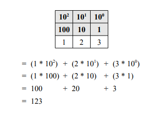
The system we normally use for representing numbers is called the decimal number system. In this system, the rightmost digit is referred to as being in the one’s or “units” position. Immediately to the left of the units position is the ten’s position. To the left of the ten’s position is the hundred’s position, then the thousand’s, then the ten thousand’s, and so on. The decimal number system is a “base ten” positional number system, because the value of each position can be expressed as a power of the number ten.
The exponent that the base is raised to is given by the position minus one. The right-most position (i.e., position 1), or units position, is 100. Note that anything to the power of zero is equal to 1. This right-most position is also known as the least significant position or digit (since it is represented by the lowest power of 10). The tens position is 101, the hundreds is 102, the thousands is 103, and so on. The value of each position is exactly ten times the value of the position immediately to its right.
The other bases work similarly. In the binary number system, the base is two; therefore, the values of the positions (given from right to left) are one (20), two (21), four (22), eight (23), sixteen (24), thirty-two (25), and so on. The value of each position in a base two system is two times the value of the position immediately to its right. For example, the number five is represented in base two as 1012 (since there is a one in the four’s position and a one in the units position). This is illustrated below:
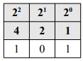
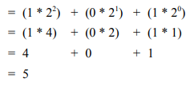
In the hexadecimal number system, the base is sixteen. Therefore, the values of the positions (again from right to left) are one (160), sixteen (161), two hundred fifty-six (162), four thousand ninety-six (163), and so on. The value of each position in this system is exactly sixteen times the value of the position immediately to its right. The value of the base sixteen number 1A316 is four hundred nineteen, since there is one in the two hundred and fifty six’s position, ten in the sixteen’s position, and three in the units position. This is illustrated below:
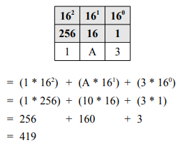
Here’s one more example illustrating the representation of the number “nineteen ninety nine” in all three of the bases we have discussed; first, in base ten:
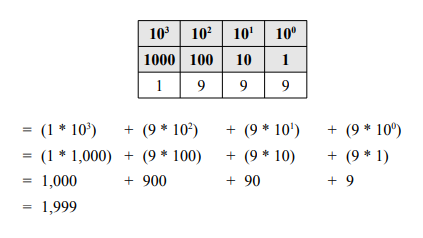
Now, in base two:
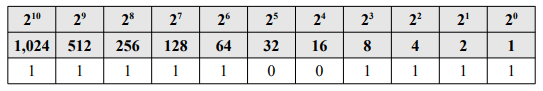
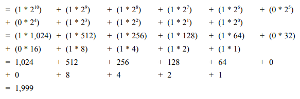
And finally, in base sixteen:
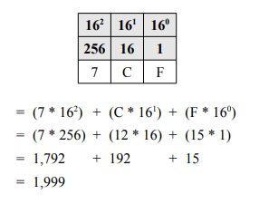
One of the most common tasks we face when working with multiple bases is converting numbers from one base to another. We have already seen how to convert from base sixteen and base two to base ten: simply multiply the value of each symbol by the value of its position and add the results together. But how do we convert from base ten to base sixteen or to base two? We also need to figure out how to convert from base two to base sixteen and from base sixteen to base two.
Converting from base two to base sixteen and from base sixteen to base two is easy. In fact, the only reason computer scientists even use base sixteen is because it serves as convenient “shorthand” for base two. The following illustrates the fact that each base sixteen digit can be represented by a group of exactly four base two digits:
| Base 16 (hexadecimal) | Base 2 (binary) |
|---|---|
| 0 | 00000 |
| 1 | 00001 |
| 2 | 00010 |
| 3 | 00011 |
| 4 | 00100 |
| 5 | 00101 |
| 6 | 00110 |
| 7 | 00111 |
| 8 | 01000 |
| 9 | 01001 |
| A | 01010 |
| B | 01011 |
| C | 01100 |
| D | 01101 |
| E | 01110 |
| F | 01111 |
To convert from base sixteen to base two, simply replace each base sixteen digit with its corresponding group of four binary digits. For example, the rather imposing hexadecimal number 1AFC316 can easily be converted its binary representation as illustrated below:

Therefore, 1AFC316 = 110101111110000112. Note that leading zeros have been removed as they are not necessary.
Try to convert FACE16 to base two.
Now try to convert 4B1D16 to base two.
Converting from base two to base sixteen is just as straightforward. We scan the base two number from right to left, replacing each group of four binary digits that we encounter with the equivalent hexadecimal digit. It is important that we group the digits of the base two representation from right to left, in case the number of digits is not evenly divisible by four. If this occurs, we simply add leading zeros until the number of digits is divisible by four. Conversion of the bit pattern 111110011112 to its hexadecimal representation is shown below:
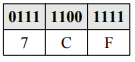
The original bit pattern, 11111001111, was first broken down from right-to-left into groups of four, and a leading zero was added to the left-most group: 0111 1100 1111. Ultimately, 111110011112 = 7CF16.
Try to convert 11110000000011012 to hexadecimal.
Try to convert 111011110101001012 to hexadecimal.
Note that these conversions between binary and hexadecimal representations in no way change the actual number being represented. For example, 7CF16 and 111110011112 both refer to the same number (1,999), as was illustrated earlier.
We have now looked at conversion methods from base two (and base sixteen) to base ten, from base sixteen to base two, and from base two to base sixteen. The only conversions that we have yet to cover are from base ten to base sixteen and from base ten to base two. We really only need to look at the base ten to base two conversion, since conversion between base two and base sixteen is so trivial. If you have a base ten number and want its base sixteen representation, you can apply a decimal to binary conversion algorithm, and then change the base two result to its base sixteen representation via the grouping method described above.
A number can be converted from decimal to binary by subtracting from it the largest power of two that is less than or equal to the number, and repeating until a remainder of zero is reached. The binary representation of the number is then formed by placing a “1” in the positions corresponding to each of the powers of two that were subtracted. A “0” is placed in the positions corresponding to the powers of two that were not subtracted.
For example, take the decimal number 37. The largest power of two that can be subtracted from it is 32 (25), which leaves five. The largest power of two that can be subtracted from 5 is 4 (22), which leaves one. Finally, the largest power of two that can be subtracted from 1 is 1 (20), which leaves zero. The base two representation of the number is thus formed by placing a “1” in the thirty-two’s, four’s, and units positions, and by placing a “0” in all other positions. This gives 1001012. The conversion process for this number is illustrated below:
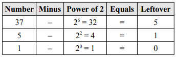
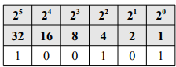
Another method of converting from decimal to binary is to divide the decimal number in half and record both the quotient and the remainder. We then repeat this process with the quotient, while keeping track of the remainder of each division. This is repeated until the quotient is zero. The binary equivalent of the original number is subsequently given by listing the remainders in the reverse order of their derivation (i.e., from the most recent remainder to the first remainder). Here’s this method on the decimal number 37:
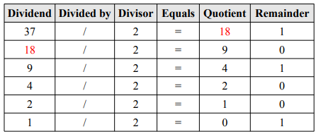
Listing the remainders in reverse order gives 100101 (the same as in the previous example). Therefore, 3710 = 1001012.
Try to convert the decimal number 642 to base two.
4 Binary arithmetic
Let’s take a look at how arithmetic operations, such as addition and multiplication, can be performed on binary numbers. First, let’s examine binary addition of single digit numbers. The simplest case is the addition of 0 plus 0. In binary, it is represented as follows:
\[0+0=0\]
Some prefer to view this vertically as opposed to horizontally as follows:
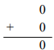
Extending this, zero plus one and one plus zero both equal one:
\[0 + 1 = 1\]
\[1 + 0 = 1\]
Or vertically:
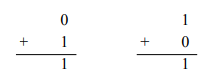
Finally, one plus one equals two. But the problem is that two cannot be represented as a single binary digit. Instead, we record a zero in the one’s position and carry a one over to the two’s position. This is represented as follows:
\[1 + 1 = 0\] (carry 1)
Or vertically:
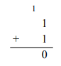
Multi-digit binary addition uses the same strategy employed in decimal addition. One works right-to-left from the least significant digit to the most significant digit, making sure that the carry from the previous column is added to the current column. Because the carry digit for a particular column may be “1” at the same time the corresponding digits of both of the numbers being added are also “1,” it is possible to encounter “one plus one plus one equals three” while performing addition. Since 112 equals three, “1” should be placed in the current position and another “1” carried over to the position immediately to the left of the current position. This is be represented as follows:
\[1 + 1 + 1 = 1\] (carry 1)
Or vertically:
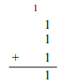
Let’s take a look at the addition of 38 + 15 = 53. The following table shows both the binary addition (on the left) and decimal addition (on the right):
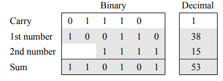
And now the addition of 43 + 58 = 101:
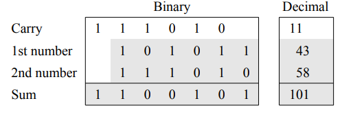
Try the addition of 50 + 77 = 127.
Binary multiplication is also fairly simple. Zero times zero equals zero, as does zero times one and one times zero. One times one equals one. These expressions can be represented in base two as follows:
\[0 \times 0 = 0\] \[0 \times 1 = 0\] \[1 \times 0 = 0\] \[1 \times 1 = 1\]
Notice that none of these four expressions generate a carry, and only one generates a result other than zero. As we will see later, these features lead to binary multiplication being easy to perform; in fact, even easier to perform than decimal multiplication!
Multiplication of multi-digit binary numbers works in a manner similar to multiplication of decimal numbers. As we all learned in grade school, multiplication problems are solved by adding together several partial products. A partial product is formed by multiplying a single digit of the bottom number times the entire top number. For example, given the base ten multiplication problem \(472 \times 104\), we would solve it in the following way:
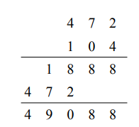
The first partial product is given by multiplying 4 times 472, which is 1888. The second partial product is computed as 0 times 472, which is 0. Normally we do not write down zero partial products. The final partial product is 1 times 472. Notice that we write this partial product so that its rightmost digit is directly under the digit of the second number that we multiplied by (i.e., 1). We then add the partial products, column by column from right-to-left, in order to obtain the final answer (49,088 in this case).
We apply this same strategy to perform binary multiplication. Let’s take a look at the product of \(19 \times 5 = 95\) (in base two: \(10011_2 \times 101_2 = 1011111_2\)):
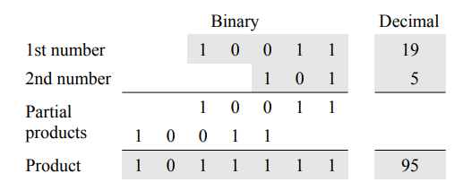
We form partial products by multiplying the top number by each of the digits of the bottom number. Since the right-most digit of the second number is 1, the first partial product is given by 1 times 100112, or 100112. The right-most digit of this partial product is aligned with the rightmost digit of the second number. We do not record the partial product for zero times something, so multiplying the first number by the second digit of the second number, 0, doesn’t generate anything. The final partial product is computed as 1 times 10011 again, but this time where the right-most digit of this result is aligned beneath the third digit of the second number. The partial products are then added to obtain the final result, 10111112.
As we have just seen, in binary multiplication the formation of the partial products is very easy since we are only multiplying by 1 (in which case we copy the top number into the proper position) or 0 (in which case we do nothing). The only difficult steps in this process are making sure that we align the partial products correctly and compute the sum of those products accurately. Now let’s try a more difficult problem: the product of 143 23 = 3289 (in base two: \(10001111_2 \times 10111_2 = 110011011001_2\))
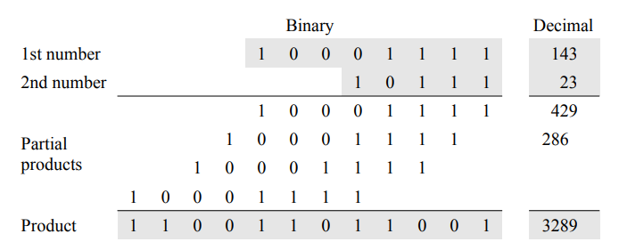
Here, we copy the top number as a partial product everywhere there is a 1 digit in the second number, each time making sure that we align the partial product so that the least significant digit is directly underneath the 1 we are multiplying by. We get the final result by adding the partial products together.
When adding together the partial products, it is important that we handle the carry values properly. Because there is no limit on the size of the numbers to be multiplied, it is possible that there will be a large number of partial products. This situation can lead to carry values that extend over multiple columns. To illustrate this, consider summing a partial product column of five 1s:

Considering these separately, we initially add the first two 1s: 1 + 1 = 10. We then add the next one to that sum: 10 + 1 = 11. We then add the next one: 11 + 1 = 100. Finally, we add the last one: 100 + 1 = 101. So, 1 + 1 + 1 + 1 + 1 = 1012. To record this, we write a 1 in the current column and carry 10, placing the 0 in the column immediately to the left of the current column and 1 immediately to the left of that column. This is no different from the situation we encounter when adding up a long series of decimal numbers. If the current column of digits added to one hundred and one, we would place a 1 in the current column, carry a 0 to the previous column, and carry a 1 to the column before that.
Let’s take a closer look at the summation of the partial products of the previous example (\(143 \times 23 = 3289\)). The right-most column of partial products offers no problem. It is simply 1 plus nothing, giving a result of 1 with no carry. The second column requires us to add 1 + 1 resulting in a 0 with 1 carried over to the third column. Column three is interesting and is illustrated below:
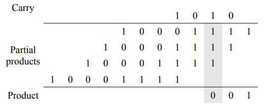
The sum of the digits in column three, including the carry, is 1 + 1 + 1 + 1 = 1002 = 4. Hence, a 0 is written in column three, a 0 is carried to column four, and a 1 is carried to column five.
Column four contains three 1s, giving us a sum of 112. Hence, we write a 1 in column four and carry a 1 to column five. Note that the 1 we just carried to column five joins the carry of 1 already in that column:
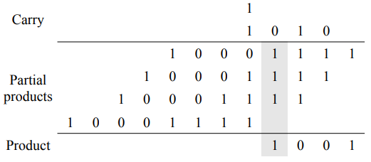
Column five now contains a total of five 1s (including the two carries). Since five is written in binary as 1012, we write a 1 in column five, and carry a 0 into column six and a 1 into column seven. The current state of the summation of partial products after adding the contents of column five is illustrated below:
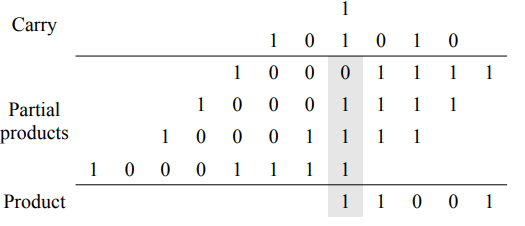
The remainder of the computation is carried out in a similar manner, always being careful to handle the carries properly. Try it out.
5 Binary adder
An adder, as its name implies, is a circuit for adding binary numbers. The simplest adder adds two bits. As shown above, adding two bits can result in the following:
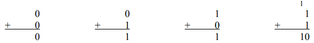
When adding, two parts are produced: a sum and a carry (each of which can be either 0 or 1). A circuit to implement the behavior of an adder will need two inputs (one for each of the single-bit numbers) and two outputs (one for the sum and one for the carry). Constructing such a circuit is fairly straightforward. Consider the following truth table for the adder (where S is sum and C is carry):
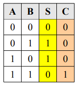
Notice that the values in the S column correspond to an xor of the two inputs, while the values in the C column correspond to an and of the two inputs. Here are their respective truth tables for reference:
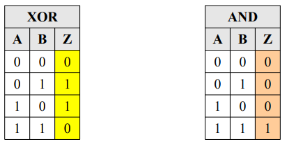
Note how the output of the xor gate is exactly the same as the sum bit produced by the adder. Similarly, the output of the and gate is exactly the same as the carry bit produced by the adder. Constructing the circuit is almost too easy:
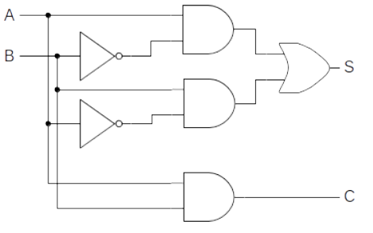
This circuit is called a half adder. It has two Boolean expressions: \(S=(A \cdot \bar{B})+(\bar{A} \cdot B)\) and \(C=A \cdot B\) . While a half adder does add two single-bit numbers and can generate a carry, it has no provision for a carry input into the circuit. As shown above, when adding two multi-bit binary numbers, one works column by column from right-to-left, making sure that the carry bit from the previous column is added into the current column. Here is the illustration of this process show earlier, on 38 and 15:
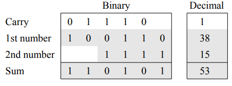
A half adder could be used to add the right-most (low-order) bits of the two numbers, but it is not general enough to add the digits of an arbitrary column since it does not support a carry as input.
A full adder overcomes this limitation of the half adder by allowing a carry to be fed into the circuit along with a bit from each of the numbers to be added. Thus, a full adder will have three inputs: the two bits being added, plus a carry in. Only two output bits, the sum and a carry out, are needed because the largest result that can be produced by the circuit will be three (112). This occurs when all three inputs are 1. Here is a complete truth table for a full adder. The inputs are almost the same as before, except that the carry in is labeled Cin, and the carry out is labeled Cout:
| Cin | A | B | S | Cout |
|---|---|---|---|---|
| 0 | 0 | 0 | 0 | 0 |
| 0 | 0 | 1 | 1 | 0 |
| 0 | 1 | 0 | 1 | 0 |
| 0 | 1 | 1 | 0 | 1 |
| 1 | 0 | 0 | 1 | 0 |
| 1 | 0 | 1 | 0 | 1 |
| 1 | 0 | 0 | 0 | 1 |
| 1 | 1 | 1 | 1 | 1 |
Designing a circuit to implement this behavior from scratch would be challenging. However, through careful observation and the use of two half adders, the job is manageable. Since we’ll be using half adders to build the full adder, our circuit diagram will be simpler if we imagine the half adder encapsulated into a black box, as shown below:
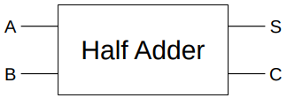
The trick to building a full adder is to think of the sum of the three terms, A + B + Cin, as a sequence of two sums associated left to right: (A + B) + Cin. One half adder will be used to compute the sum A + B. The sum bit output by this half adder, along with Cin, will be fed as input into a second half adder. The sum bit produced by the second half adder will serve as the sum bit of the full adder. The carry out bit of the full adder is produced by routing the carry out bits of both half adders into an or gate. This is illustrated below:
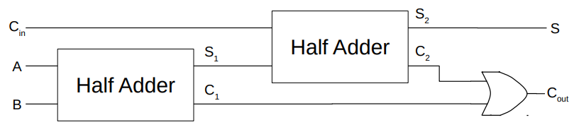
Try to develop a complete implementation of the full adder using only and, or, and not gates.
Now verify that this circuit does, in fact, generate the truth table for binary addition.
Just as we encapsulated the half adder, we can encapsulate the single-bit full adder into a black box.
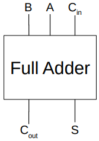
This representation looks a little different than the previous circuit because it has been rotated clockwise 90 degrees to make the following figure easier to read. Note that the inputs, outputs, behavior, and internal details of the circuit remain unchanged.
Multi-bit adders can be implemented as a chain of single-bit full adders where the carry out of each adder is routed to the carry in of the adder immediately to its left. Under this scheme, each full adder is essentially responsible for adding a single bit of each of the two input numbers, plus the carry bit generated by the adder immediately to its right. The carry in for the rightmost adder is permanently set to 0. The carry out of the leftmost adder indicates whether or not addition of the inputs produces an overflow. We will cover why this is necessary later when discussing how numbers are represented.
Here’s a four-bit adder constructed from four single-bit (full) adders. In this example, A holds the number six (01102) and B holds seven (01112). The result of this addition operation is 11012, or thirteen:
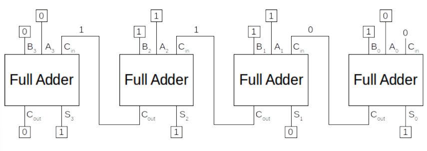
Interestingly, we can continue to build this. To illustrate this, let’s go back one step to the full adder. We can chain two full adders together (each of which can effectively produce the sum and Cout of A, B, and Cin) to produce the sum of two 2-bit numbers as follows:
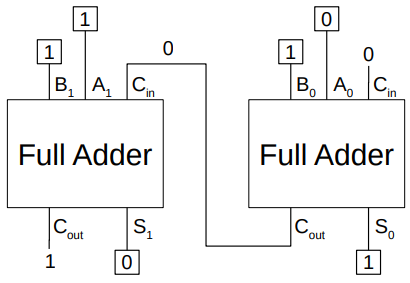
Indeed, 102 + 112 = 1012 (the overflow bit is 1). And now we can box the two full adders into a single 2- bit adder as follows:
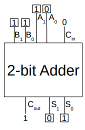
The result is the same as chaining two full adders. The Cout of the first full adder that is wired to the Cin of the second full adder is now internal to the 2-bit adder. This 2-bit adder effectively adds two 2-bit numbers (A and B composed of the bits A0, A1, B0, and B1). It produces two sums (S0 and S1 – one for each bit) and a Cout (the overflow bit).
We can chain several 2-bit adders in a similar manner to produce a 4-bit adder as follows:
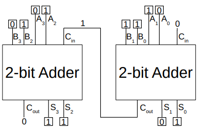
The effect is the same as show earlier when we chained four full adders. This combination of two 2-bit adders produces the same sum: 01102 + 01112 = 11012 (the overflow bit is 0). Of course, this can be continued. We could encapsulate the two 2-bit adders into a 4-bit adder, and chain two of those to produce a single 8-bit adder. Two 8-bit adders could be encapsulated into a single 16-bit adder. Two 16-bit adders could be encapsulated into a single 32-bit adder. And this can go on and on. The incredible part about this is that, in the end, a seemingly complicated 32-bit adder is still just made up of many full adders chained together, which are themselves made up of half adders, which are themselves made up of the three primitive logic gates: and, or, and not. Simply amazing!
6 Bitwise operators in Python
Up to this point, we’ve left out one final class of operators in Python: the bitwise operators. The reason is that they really only make sense once we understand how numbers are represented in computers. Moreover, how binary arithmetic works is fundamental to understanding them.
The bitwise operators work on bits and perform bit-by-bit operations. Think back to the primitive logic gates (and, or, and not) and some derivatives (e.g., xor). Each of these concepts operated on bits and produced bits. In the following table, assume that a = 60 (or 00111100 in binary) and b = 13 (or 00001101 in binary):
| Operator | Logical Operation | Definition | ||
|---|---|---|---|---|
| & | bitwise and | a & b = 00001100 (or 12 in decimal) | ||
| | | bitwise or | a | b = 001111101 (or 61 in decimal) | ||
| ^ | bitwise xor | a ^ b = 00110001 (or 49 in decimal) | ||
| ~ | bitwise not | ~a = 11000011 (or -61 in decimal; we will explain this one later) | ||
| << | left shift | a << 2 = 11110000 (or 240 in decimal) | ||
| >> | right shift | a >> 2 = 1111 (or 15 in decimal) |
The bitwise not has the effect of inverting the bits. Why 11000011 in binary is equal to -61 in decimal will be explained in a later lesson. Here is output of the examples in the previous table in IDLE:
>>> a = 60
>>> b = 13
>>> bin(a)
'0b111100'
>>> bin(b)
'0b1101'
>>> a & b
12
>>> bin(a & b)
'0b1100'
>>> a | b
>>> bin(a | b)
'0b111101'
>>> a ^ b
49
>>> bin(a ^ b)
'0b110001'
>>> ~a
-61
>>> a = 60
>>> b = 13
>>> a << 2
240
>>> bin(a << 2)
'0b11110000'
>>> a >> 2
15
>>> bin(a >> 2)
'0b1111'Note the use of the bin function. It returns the binary representation of a value. If a = 60, the statement bin(a) returns 0b111100 (which is 60 in binary). The prefix 0b implies binary. In fact, you can assign values to variables in binary form using this prefix:
>>> a = 0b00111100
>>> a
60This can be done in other bases as well. For example, in hexadecimal (with the prefix 0x) or in octal (with the prefix 0o):
>>> a = 0b00111100
>>> a
60
>>> b = 0xff
>>> b
255
>>> c = 0o15
>>> c
13